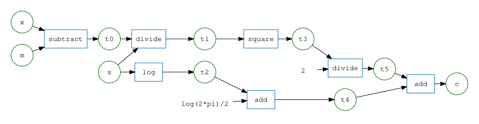
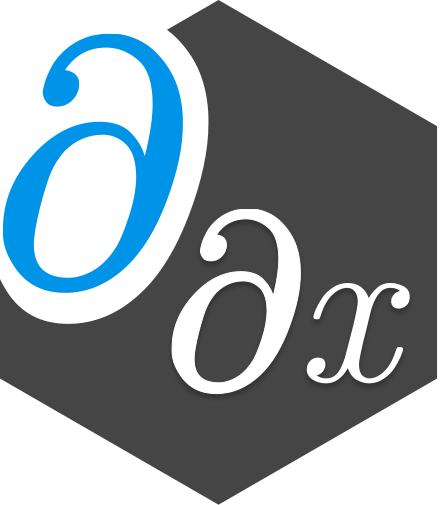
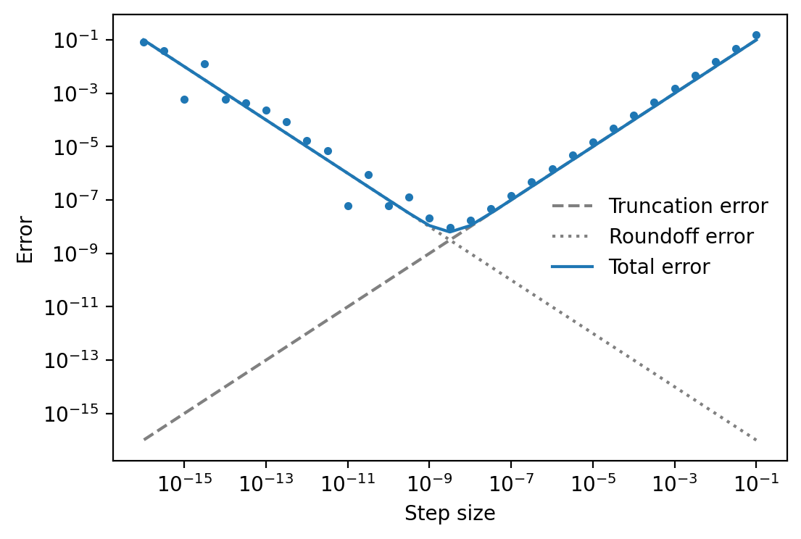
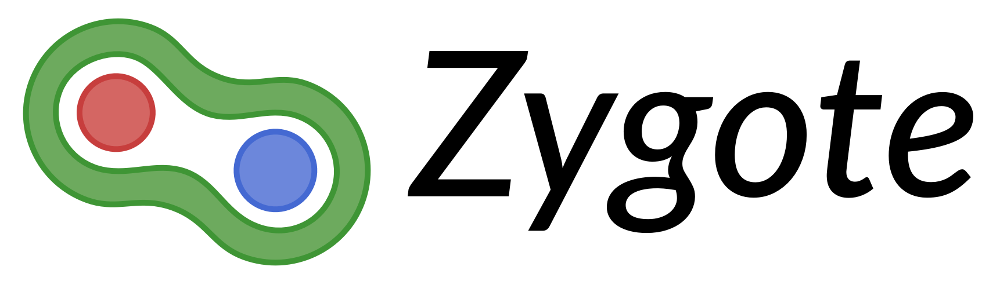

timeline
2008-2012: MEng in Engineering
2012-2013: MRes in Neuroinformatics
2013-2017: PhD in Informatics @ Edinburgh
2017-2020: Research fellow @ NUS
2020-2021: Research associate @ Newcastle
2021-2022: Research software developer @ UCL
2022-: Research data scientist @ UCL
Automatic differentiation
A research software engineer’s eye view

Matt Graham <matt-graham.github.io>
Principal Research Data Scientist
UCL Centre for Advanced Research Computing (ARC)
👣 My path to becoming an RSE
Undergraduate
in
information
and
computer
engineering.
MRes
+
PhD
in
Doctoral
Training
Centre
in
Neuroinformatics
and
Computational
Neuroscience,
with
thesis
on
Auxiliary variable Markov chain Monte Carlo methods
.
Postdoctoral
positions
in
computational
statistics
groups
at
National
University
of
Singapore
and
Newcastle
University.
Joined
UCL
as
a
research
software
developer
in
April
2021.
Research
data
scientist
at
UCL
ARC
since
April
2022.
❓ Why automatic differentiation?
Autograd


First
started
using
automatic
differentiation
during
PhD
in
context
of
gradient-based
Bayesian
inference
methods.
Initially
used
Theano
and
later
made
some
small
contributions
to
project
(my
first
open-source
development
experience!).
Started
building
a
Python
software
package
Mici
using
(HIPS)
Autograd
towards
end
of
PhD
in
2016.
Began
using
JAX
extensively
for
research
projects
during
postdoctoral
positions
after
its
release
in
2018.
Subsequently
since
joining
ARC
have
contributed
to
a
JAX
based
package
for
spherical
harmonics
transforms
(S2FFT).
Currently
exploring
various
tools
in
Julia
space
particularly
Enzyme
for
propagating
derivatives
through
climate
models.
🤔 What is automatic differentiation?
An approach for computing the derivatives of a function composed of primitive operations with known derivatives by algorithmically applying the rules of differentiation.
Also known as algorithmic differentiation.
Distinct from but related to both numerical differentiation and symbolic differentiation.
🕰️ History
Automatic differentiation (AD) has a long history dating back to the 1960s.
R.E. Wengert (1964). A simple automatic derivative evaluation program. CACM 7(8), pp. 463–4.
A procedure for automatic evaluation of total / partial derivatives of arbitrary algebraic functions is presented … The key to the method is the decomposition of the given function, by introduction of intermediate variables, into a series of elementary functional steps.
In machine learning reverse-mode AD historically known as backpropagation. Adjoint method also closely related.
✨ Advantages of AD
- Efficient: can evaluate the Jacobian of a function \(f : \mathbb{R}^N \to \mathbb{R}^M\) at an operation cost which is \(\mathcal{O}\left(\min(M, N)\right)\) times the cost of evaluating \(f\).1
- Expressive: applicable to any differentiable function which can be expressed algorithmically including use of control flow.
- Exact: provides exact derivatives of a function (modulo usual errors from using floating-point arithmetic).
📝 Notation
For a differentiable function \(f : \mathbb{R}^N \to \mathbb{R}^M\)
- \(f_m : \mathbb{R}^N \to \mathbb{R}\) is the component function giving the value of the \(m\)th output of \(f\),
- \(\partial_n f : \mathbb{R}^N \to \mathbb{R}^M\) is the derivative of \(f\) with respect to \(n\)th dimension in argument,
- \(\partial f : \mathbb{R}^N \to \mathbb{R}^{M\times N}\) is the function computing the Jacobian (matrix of partial derivatives) of \(f\).
🔢 Numerical differentiation
Finite difference methods based on limit definitions of (partial) derivatives.
For example for a differentiable function \(f : \mathbb{R}^N \to \mathbb{R}^M\) if \(\mathbf{e}_n\) is the length \(N\) vector with 1 at the \(n\)th entry and zeros elsewhere then for a small positive \(h\)
\[ \partial_n\, f(x) \approx \frac{f(x+h\mathbf{e}_n)-f(x)}{h} \]
(first order forward finite difference formula).
🔢 Numerical differentiation
To approximate the full \(M\times N\) Jacobian matrix \(\partial f\) need to compute finite differences for each of \(\mathbf{e}_1 \dots \mathbf{e}_N\) \(\implies\)
cost \(\mathcal{O}(N)\) evaluations of \(f\).
Particularly burdensome for calculating the gradient of scalar functions of a large number of variables (\(M=1\), \(N \gg 1\)).
For small \(h\) can become numerically unstable.
⚠️ Finite difference numerical error

ℹ️ Aside: Complex step method
For analytic \(f : \mathbb{R}^N \to \mathbb{R}^M\), expanding as a Taylor series:
\[ f(x + jh\mathbf{e}_n) = f(x) + jh \partial_n\,f(x) + \mathcal{O}(h^2) \]
Taking the imaginary component of both sides and rearranging
\[ \partial_n\,f(x) = \text{Im}\big(f(x + jh\mathbf{e}_n)\big) / h + \mathcal{O}(h^2) \]
Avoids floating point errors in computation of difference - \(\mathcal{O}(h^2)\) accuracy even for very small \(h\).
🔡 Symbolic differentiation
Implementations of rules of calculus in computer algebra systems (e.g. SymPy, Deriv in R, Symbolics.jl).
Gives human-readable expressions as output but verbose for complicated compositions of functions and redundancy between partial derivatives.
AD instead exploits modularity of functions, computing derivatives in terms of intermediate values rather than expanding in terms of inputs.
🇻 Jacobian vector products
As the Jacobian \(\partial f(x)\) is a linear map \(\mathbb{R}^N \to \mathbb{R}^M\) we can apply it to a vector \(v \in \mathbb{R}^N\). We term this operation a Jacobian vector product (JVP)
\[\texttt{JVP}(\,f)(x)(v) := \partial f(x) v\]
Operation cost of \(\texttt{JVP}(\,f)(x)(v)\) = \(\mathcal{O}(1)\times \,\) cost of \(f(x)\).
🇻 Vector Jacobian products
The transpose of the Jacobian \(\partial f(x)^{\mathsf{T}}\) is a linear map \(\mathbb{R}^M \to \mathbb{R}^N\) can be applied to a vector \(v \in \mathbb{R}^M\). We term this a vector Jacobian product (VJP) (cf. adjoint operator)
\[\texttt{VJP}(\,f)(x)(v) := \partial f(x)^{\mathsf{T}} v = \left( v^{\mathsf{T}} \partial f(x)\right)^{\mathsf{T}}\]
Operation cost of \(\texttt{VJP}(\,f)(x)(v)\) = \(\mathcal{O}(1)\times \,\) cost of \(f(x)\).
⛓️ Chain rule
Chain rule for functions \(f : \mathcal{X} \to \mathcal{Y}\) and \(g : \mathcal{Y} \to \mathcal{Z}\)
\[\partial (\,f\circ g) = (\partial f \circ g) \, \partial g\]
or equivalently if \(y = g(x)\) and \(z = f(y)\)
\[\frac{\partial z}{\partial x} = \frac{\partial z}{\partial y} \frac{\partial y}{\partial x} = \partial f(y) \partial g(x).\]
➡️ Forward-mode accumulation
\[\begin{align}
\texttt{JVP}(\,f\circ g)(x)(v)
&\color{black}{{} = \partial (\,f\circ g)(x) \, v}
\\
&\color{lightgray}{{} = \partial f \circ \underbrace{g(x)}_{y=g(x)} \, \partial g(x) \, v}
\\
&\color{lightgray}{{} = \partial f(y) \, \partial g(x) v}
\\
&\color{lightgray}{{} =\texttt{JVP}(\,f)(y)(\texttt{JVP}(g)(x)(v))}
\end{align}\]
\[\begin{align}
\texttt{JVP}(\,f\circ g)(x)(v)
&\color{lightgray}{{} = \partial (\,f\circ g)(x) \, v}
\\
&\color{black}{{} = \partial f \circ \underbrace{g(x)}_{y=g(x)} \, \partial g(x) \, v}
\\
&\color{lightgray}{{} = \partial f(y) \, \partial g(x) v}
\\
&\color{lightgray}{{} =\texttt{JVP}(\,f)(y)(\texttt{JVP}(g)(x)(v))}
\end{align}\]
\[\begin{align}
\texttt{JVP}(\,f\circ g)(x)(v)
&\color{lightgray}{{} = \partial (\,f\circ g)(x) \, v}
\\
&\color{lightgray}{{} = \partial f \circ \underbrace{g(x)}_{y=g(x)} \, \partial g(x) \, v}
\\
&\color{black}{{} = \partial f(y) \, \partial g(x) v}
\\
&\color{lightgray}{{} =\texttt{JVP}(\,f)(y)(\texttt{JVP}(g)(x)(v))}
\end{align}\]
\[\begin{align}
\texttt{JVP}(\,f\circ g)(x)(v)
&\color{lightgray}{{} = \partial (\,f\circ g)(x) \, v}
\\
&\color{lightgray}{{} = \partial f \circ \underbrace{g(x)}_{y=g(x)} \, \partial g(x) \, v}
\\
&\color{lightgray}{{} = \partial f(y) \, \partial g(x) v}
\\
&\color{black}{{} =\texttt{JVP}(\,f)(y)(\texttt{JVP}(g)(x)(v))}
\end{align}\]
Can evaluate \(g(x)\) at same time as \(\texttt{JVP}(g)(x)\).
⬅️ Reverse-mode accumulation
\[\begin{align}
\texttt{VJP}(\,f\circ g)(x)(v)
&\color{black}{{} = \partial (\,f\circ g)(x)^{\mathsf{T}} v}
\\
&\color{lightgray}{{} = (\partial f \circ g(x) \partial g(x))^{\mathsf{T}} v}
\\
&\color{lightgray}{{} = \partial g(x) ^{\mathsf{T}} (\partial f \circ \underbrace{g(x)}_{y=g(x)}) ^{\mathsf{T}} v}
\\
&\color{lightgray}{{} = \partial g(x) ^{\mathsf{T}} \, \partial f(y) ^{\mathsf{T}} v}
\\
&\color{lightgray}{{} = \texttt{VJP}(g)(x)(\texttt{VJP}(\,f)(y)(v))}
\end{align}\]
\[\begin{align}
\texttt{VJP}(\,f\circ g)(x)(v)
&\color{lightgray}{{} = \partial (\,f\circ g)(x)^{\mathsf{T}} v}
\\
&\color{black}{{} = (\partial f \circ g(x) \partial g(x))^{\mathsf{T}} v}
\\
&\color{lightgray}{{} = \partial g(x) ^{\mathsf{T}} (\partial f \circ \underbrace{g(x)}_{y=g(x)}) ^{\mathsf{T}} v}
\\
&\color{lightgray}{{} = \partial g(x) ^{\mathsf{T}} \, \partial f(y) ^{\mathsf{T}} v}
\\
&\color{lightgray}{{} = \texttt{VJP}(g)(x)(\texttt{VJP}(\,f)(y)(v))}
\end{align}\]
\[\begin{align}
\texttt{VJP}(\,f\circ g)(x)(v)
&\color{lightgray}{{} = \partial (\,f\circ g)(x)^{\mathsf{T}} v}
\\
&\color{lightgray}{{} = (\partial f \circ g(x) \partial g(x))^{\mathsf{T}} v}
\\
&\color{black}{{} = \partial g(x) ^{\mathsf{T}} (\partial f \circ \underbrace{g(x)}_{y=g(x)}) ^{\mathsf{T}} v}
\\
&\color{lightgray}{{} = \partial g(x) ^{\mathsf{T}} \, \partial f(y) ^{\mathsf{T}} v}
\\
&\color{lightgray}{{} = \texttt{VJP}(g)(x)(\texttt{VJP}(\,f)(y)(v))}
\end{align}\]
\[\begin{align}
\texttt{VJP}(\,f\circ g)(x)(v)
&\color{lightgray}{{} = \partial (\,f\circ g)(x)^{\mathsf{T}} v}
\\
&\color{lightgray}{{} = (\partial f \circ g(x) \partial g(x))^{\mathsf{T}} v}
\\
&\color{lightgray}{{} = \partial g(x) ^{\mathsf{T}} (\partial f \circ \underbrace{g(x)}_{y=g(x)}) ^{\mathsf{T}} v}
\\
&\color{black}{{} = \partial g(x) ^{\mathsf{T}} \, \partial f(y) ^{\mathsf{T}} v}
\\
&\color{lightgray}{{} = \texttt{VJP}(g)(x)(\texttt{VJP}(\,f)(y)(v))}
\end{align}\]
\[\begin{align}
\texttt{VJP}(\,f\circ g)(x)(v)
&\color{lightgray}{{} = \partial (\,f\circ g)(x)^{\mathsf{T}} v}
\\
&\color{lightgray}{{} = (\partial f \circ g(x) \partial g(x))^{\mathsf{T}} v}
\\
&\color{lightgray}{{} = \partial g(x) ^{\mathsf{T}} (\partial f \circ \underbrace{g(x)}_{y=g(x)}) ^{\mathsf{T}} v}
\\
&\color{lightgray}{{} = \partial g(x) ^{\mathsf{T}} \, \partial f(y) ^{\mathsf{T}} v}
\\
&\color{black}{{} = \texttt{VJP}(g)(x)(\texttt{VJP}(\,f)(y)(v))}
\end{align}\]
Need to evaluate \(g(x)\) before evaluating \(\texttt{VJP}(g)(x)\).
🔁 Forward- and reverse-mode AD
Define function as an arbitrary composition of primitives which we can evaluate JVPs or VJPs for.
By recursively applying the chain rule we can compute a JVP or VJP for the whole function.
In the case of reverse-mode accumulation using VJPs we must first compute and store all intermediate values in a forward pass before propagating the derivatives from the outputs to inputs in a backwards pass.
🔽 Computing gradients
For a scalar-valued function \(f : \mathbb{R}^N \to \mathbb{R}\) we can express its gradient \(\nabla f: \mathbb{R}^N \to \mathbb{R}^N\) as a VJP
\[\nabla f(x) = \partial f(x)^{\mathsf{T}} [1] = \texttt{VJP}(\,f)(x)([1]).\]
Using reverse-mode accumulation we can therefore compute \(\nabla f(x)\) at similar cost to evaluating \(f(x)\).
🔔 Normal log density example
Consider computing the derivatives negative log density of a univariate normal distribution with mean \(m\) and standard deviation \(s\) at a point \(x\)
\[ c = f(x, m, s) = \frac{1}{2}\left(\frac{x-m}{s}\right)^2 + \log (s) + \frac{1}{2}\log (2\pi) \]
🔡 Symbolic differentiation: SymPy
\(\displaystyle \left[\begin{matrix}\frac{- m + x}{s^{2}} & \frac{m - x}{s^{2}} & \frac{s^{2} - \left(m - x\right)^{2}}{s^{3}}\end{matrix}\right]\)
Each derivative is evaluated separately and no sharing of common subexpressions.
🔢 Numerical differentiation: NumPy
(np.float64(-0.5785123935453385),
np.float64(0.5785123935453385),
np.float64(0.5409466652395167))Four evaluations of function, \(\mathcal{O}(h)\) approximate output.
ℹ️ Complex step: NumPy
(-0.5785123966942147, 0.5785123966942147, np.float64(0.5409466566491361))Three evaluations of function, \(\mathcal{O}(h^2)\) approximate output.
🇦 Automatic differentiation: Autograd
(array(-0.5785124), array(0.5785124), array(0.54094666))One forward and backward pass to evaluate all 3 derivatives and ‘exact’ output.
🇯 Automatic differentiation: JAX
(Array(-0.57851243, dtype=float32, weak_type=True),
Array(0.57851243, dtype=float32, weak_type=True),
Array(0.5409466, dtype=float32, weak_type=True))JAX automatic differentiation API very close to Autograd but also allows additional functional transformations such as just-in-time compilation and dispatching to accelerator devices.
🇪 Automatic differentiation: Enzyme
using Enzyme
neg_log_dens(x, m, s) = ((x - m) / s)^2 / 2 + log(s) + log(2π) / 2
x, m, s = 0.5, 1.2, 1.1
autodiff(Reverse, neg_log_dens, Active, Active(x), Active(m), Active(s))((-0.5785123966942148, 0.5785123966942148, 0.5409466566491361),)Enzyme performs automatic differentiation on statically analysable LLVM intermediate representation. It has Julia bindings but also supports other languages that can be compiled with LLVM including C++ and Fortran.
𖣂 Computational graphs
Directed acyclic graph representation of function evaluation.
Node types: variables (circles) and primitives (rectangles).
Root variables: Input argument(s) to function.
Leaf variables: Value(s) returned by function.
🔁 Forward and reverse sensitivities
For a variable v then
v̲represents the derivative ofvwrt an input variable,̄vrepresents the derivative of an output variable wrtv,
If the input variable is v then v̲ = 1 and likewise if the output variable is v then ̄v = 1.
🔔 Normal log density example
def neg_log_dens(x, m, s):
t0 = x - m
t1 = t0 / s
t2 = log(s)
t3 = t1**2
t4 = t2 + log(2 * pi) / 2
t5 = t3 / 2
c = t4 + t5
return c➡️ Forward-mode accumulation
Primal evaluation
Forward-mode
⬅️ Reverse-mode accumulation
Primal evaluation
Reverse-mode
🔄 Higher-order derivatives
We can iteratively apply combinations of forward- and reverse-mode AD to compute higher-order derivatives.
For example for \(f: \mathbb{R}^N \to \mathbb{R}\), Hessian vector product:
\[\partial^2 f(x) v = \texttt{JVP}\big(x' \to \texttt{VJP}(f)(x')([1])\big)(x)(v).\]
More efficient alternatives exist based on propagating Taylor polynomials (Bischof Corliss, & Griewank, 1993).
🆚 Forward-mode vs. reverse-mode
Forward-mode AD
- Generally implementationally simpler than reverse-mode.
- Primal and derivatives computed together in one pass.
- Often implemented using dual-numbers and overloading.
- Less widely applicable (vector functions with few inputs).
Reverse-mode AD
- Derivatives need to be propagated in separate reverse pass.
- Requires structure for recording forward pass and reversing.
- Memory requirements grow with computational graph size.
- Rematerialization allows computation / memory trade-off.
- More widely applicable (scalar functions with many inputs).
🖥️ Computational frameworks
Increasing
number
of
frameworks
with
AD
functionality:
How
to
choose
which
to
use?
Python
Autograd

Julia
ForwardDiff.jl ReverseDiff.jl

⚖️ Framework tradeoffs
- 💻 Generality: Machine learning specific versus general purpose scientific computing.
- 🤸♂️ Flexibility: ‘Walled gardens’ of primitives, support for mutation and dynamic control-flow.
- 🤗 User-friendliness: Ease of use of API, informativeness of error messages and documentation.
- 🛠️ Stability: How active is development and maintenance of package now and in longer term?
- 🚀 Performance: Interpreter and compiler overheads, support for accelerator devices.
🗣️ My opinions and experiences
- PyTorch: more general purpose than TensorFlow but still machine learning biased; easy to use if you like objected-oriented design and well documented.
- Autograd: general purpose with familiar NumPy like interface; high interpreter overhead limits performance; some questions on long-term maintenance.
- JAX: similar interface to Autograd but more performant due to JIT compilation; functional programming style divisive; great documentation and active development.
- Enzyme: promise of being very general; highly performant when you can get it working; more complex API and occassionally cryptic error messages.
🔚 Final thoughts
- When it can be used AD allows computing derivatives both more cheaply and accurately than finite differences.
- Using AD with existing numerical models will in practice almost always require some level of reimplementation.
- Different frameworks offer differing trade-offs between flexibility, performance and ease of use.
- Important to consider stability and long-term maintenance of frameworks you are building on.
📖 References and further reading
- Wengert (1964). A simple automatic derivative evaluation program. doi:10.1145/355586.364791
- Griewank (1988). On Automatic Differentiation. Technical Report ANL/MCS-P10-1088
- Bischof, Corliss, and Griewank (1993). Structured second- and higher-order derivatives through univariate Taylor series. doi:10.1080/10556789308805543
- Griewank and Walther (2008). Evaluating derivatives: Principles and techniques of algorithmic differentiation. doi:10.1137/1.9780898717761
- Griewank (2012). Who invented the reverse mode of differentiation? Documenta Mathematica, pp.389-400.
- Baydin, Pearlmutter Radul and Siskind (2018). Automatic differentiation in machine learning: a survey. arXiv:1502.05767
- Margossian (2018). A review of automatic differentiation and its efficient implementation. arXiv:1811.05031
- Gebremedhin and Walther (2020). An introduction to algorithmic differentiation. doi:10.1002/widm.1334
- Blondel and Roulet (2024). The Elements of Differentiable Programming. arXiv:2403.14606
🧱 Walled gardens vs. fenced fields
Some quotes from a Julia Discourse discussion on lessons Julia’s AD ecosystem can learn from other frameworks
One of the issues that can come up when you try to be quite general is that you fail and then this failure is perceived as making the system unusable. This can be true even when the actual working features vastly exceed the ability of the next best thing.
Part of the issue is hardly anyone is an expert on where the bug/failure boundary is, so people can prefer a strong fence that keeps them in a small pen that they at least know there are no land mines inside. Being able to go into a bigger field but having only a rough idea where the minefield is… not so desirable (Daniel Lakeland)
Another alternative is to create a walled garden like JAX, in which the only things that are likely to work are compositions of
jax.*. Don’t use Numpy, usejax.numpy. Don’t use Scipy, usejax.scipy. Usejax.experimental.ode.odeintto integrate your ODEs, and so forth. One basic issue with this approach is that it requires massive financial resources, ala Google, to re-implement so many popular numerical libraries (Steven G. Johnson)
A walled garden can’t sustain a herd of cattle, unless it’s massive, but just leaving them in a completely unenclosed space isn’t feasible either, unless you’re willing to constantly look out for wolves. That’s why we graze cattle on large fields surrounded by cheap fences. I’m still looking for the equivalent of the fenced field in Julia autodiff. I’m happy to make some promises (limits on while loops, runtime dispatch, or control flow), but others I won’t (Parada Carleton)